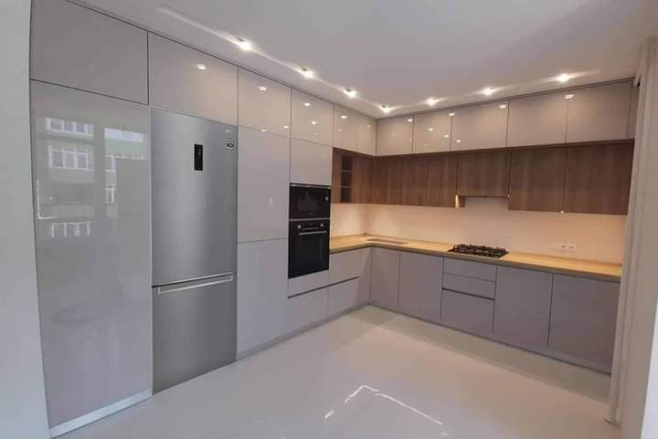
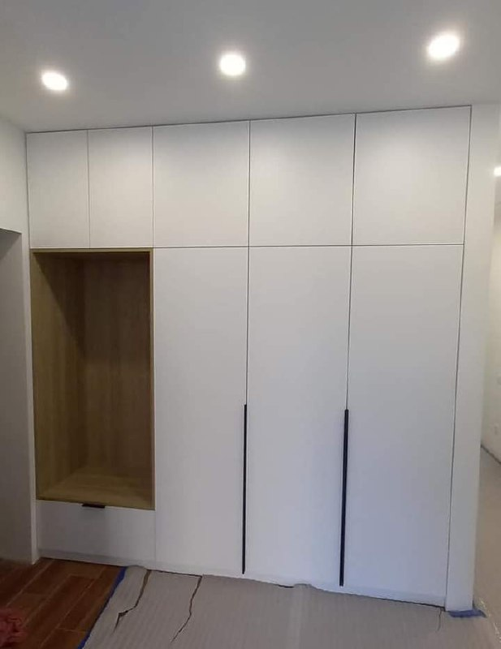
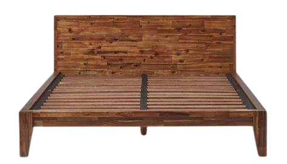

-

Кухня
Ще одна біла красуня. 🤩Саме білі кухні є трендом вже кілька років. Хочете запитати чому?🤔...адже вони вимазуються. ☝Але з практики, саме білі кухні виглядають більш охайними ніж темні. На них не видно пороху і слідів від води, завдяки цьому догляд за кухнею не потребує сильних, щоденних зусиль. Ви запитаєте: а як же бруд і жир? Так його видно на будь-якому кольорі! Вибір за вами 😉
-

Полички
У нас замовити можна не тільки меблі для кухні а й полички!😁 Адже саме полички найзручніші місця там де можна покласти речі та прикрасу😝. Але говоримо зразу на них збиратемиться пил який буде накоплюватися кожних пару тижнів😓...Хоча на всіх предметах збирається пил! Тому вирішуйте самі!🙃
-

Шафи
Так, Так, Знову білі. Знову повторимо що такий тип меблів є трендом!😅 Також ці шафи виглядають круто не правда ж?😥 Також там дуже добре помістяться речі багато, хоч і виглядає компактно!😎
-

Столи
Столи є в кожному домі адже де ви будете їсти, працювати, готувати, тощо.🤩 Тому столи у яких є полички, тумбочки та шафи ну дуже компактні та класні!